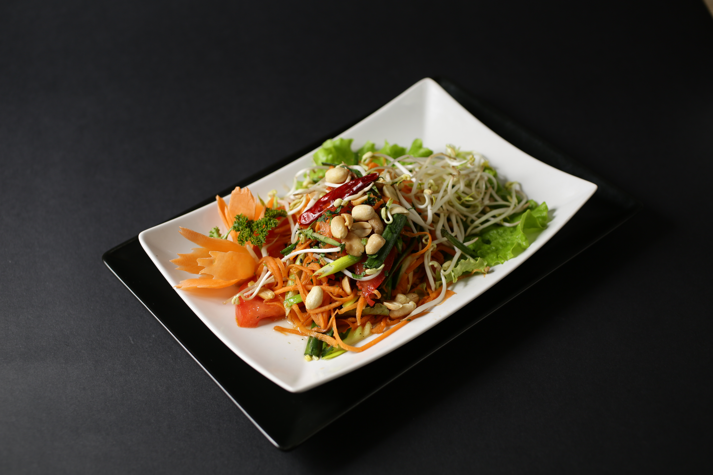

Sočna junetina u woku sa bambusom, brokolijem, paprikom i thai začinima. Poslužena
sa porcijom jasmin pirinča.
Yum Wun Sen
Pikantni kristalni rezanci, sa gamborima i kikirikijem u soku od limuna. Sve arome
Tajlanda na jednom mestu. Ljuto,kiselo, slatko i egzotično iskustvo.
Rainbow Salad
Beli i ljubičasti kupus, cvekla, šargarepa, brusnica, suvo grožđe i semenke golice
u thai dresingu.

Thai Som Tam
Četiri esencijalna ukusa Tajlanda. Kiselo, slatko, ljutkasto i egzotično.
Servirano sa domaćim čili sosom.